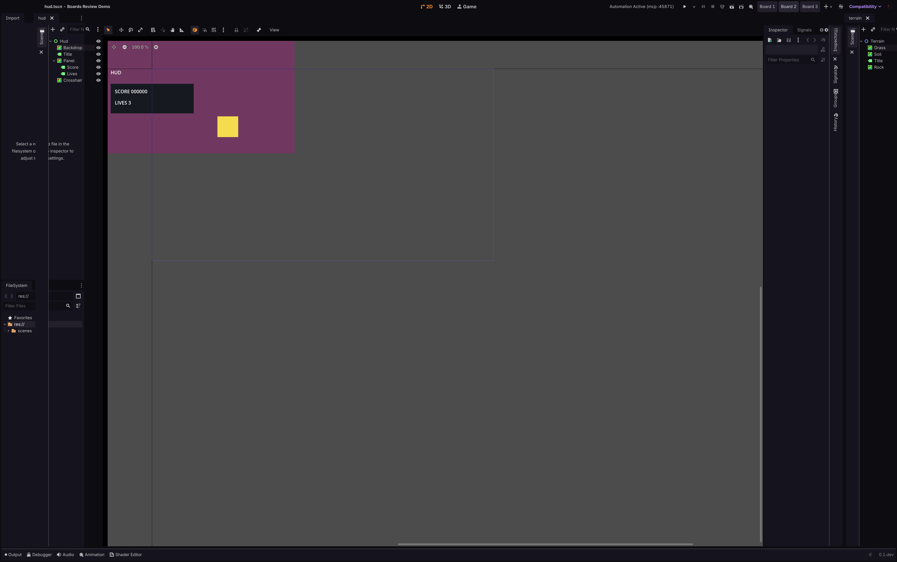
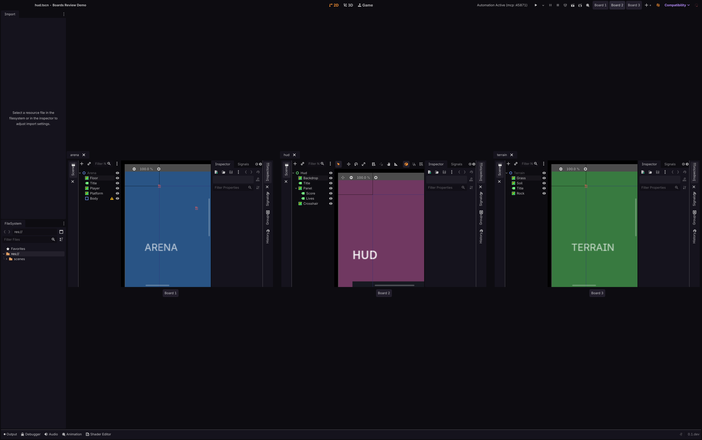
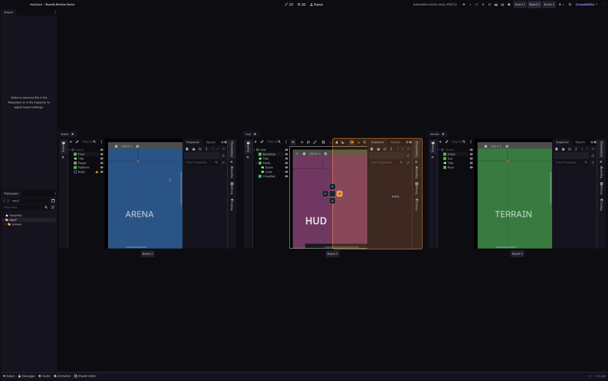
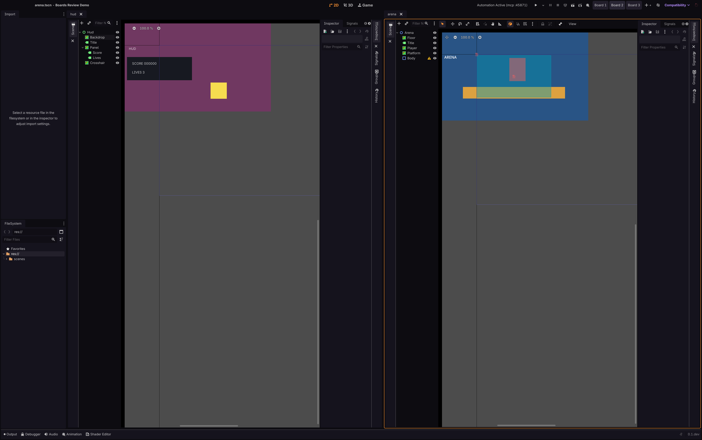

1.Confirm one board on its own looks exactly like the editor did before boards existed: a single scene tab strip, the Scene dock on the left, the Inspector on the right, and nothing new inside the editing area. The only addition is the Board 1/2/3 switcher in the title bar (Board 3 highlighted).

2.Confirm the neighboring board is still on screen at the right edge during the switch: Board 3's own scene tab ('terrain') and its own Scene dock (Terrain/Grass/Soil/Title/Rock) are visible beside the arriving Board 2. Two boards sharing the frame is what proves the switch travels through space rather than swapping one board's content for another's in place.

3.Confirm no board in the zoomed-out overview is a frozen still: each of the three shows its own live 2D viewport rendering its own scene (ARENA, HUD, TERRAIN), its own scene tab, its own Scene dock listing that scene's nodes, and its own Inspector. A cached thumbnail could not show per-board docks and node lists.

4.Confirm the drop rosette is lit on a different board from the one the drag started in: the 'arena' pane is being dragged out of Board 1 (its tab is still in Board 1's strip on the left), while the rosette and the orange right-half drop preview are on Board 2 in the middle, with the right-hand chevron aimed. Board 3 is untouched.

5.Confirm the cross-board move completed: the editor is back on a single board (Board 2 highlighted) and arena now lives there as a second pane, split to the right of hud, focused and fully interactive. Board 1 no longer lists arena — its emptied pane collapsed, and the board itself survived in the switcher.